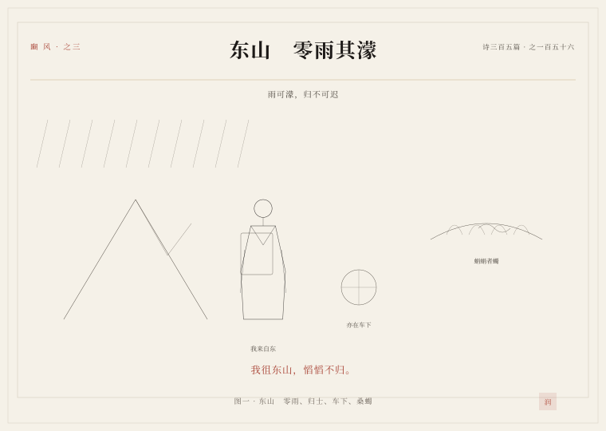
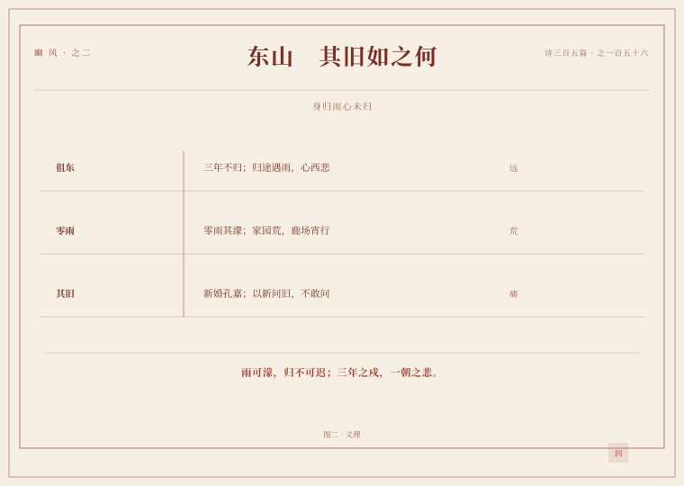

第一百五十六篇 东山
豳风 · 之三 SJ156
朗读 · 普通话
依经文原文朗读，章次不读出；配古琴底乐，不改速、不加拖腔。全库同一音色（豆包 TTS），非播音员录制。
一 解题
诗三判：
- 谁在说：随周公东征而归的士卒。三年而还，归途遇雨，近乡而情怯；一路所见，家园荒凉，妻子叹息，旧日新婚皆上心头。
- 说什么事：四章皆以「我徂东山，慆慆不归；我来自东，零雨其濛」叠起；一章写归途与独宿，二章写家园荒废，三章写妻思与重逢，四章写新婚回忆。同一场雨，四层心事。
- 为何编在此：豳风第三篇。前篇护巢之危，此篇写征戍之苦；一室之危在朝，三年之戍在野。
《毛序》：「《东山》，周公东征也。周公东征，三年而归，劳归士。大夫美之，故作是诗也。」
朱子《诗集传》：「赋也。东山，所征之地。慆慆，言久也。零雨，雨落也。濛，雨貌。」一章：「裳衣，平居之服。士，事也。行枚，衔枚而行也。蜎蜎，动貌。蠋，桑虫。敦，独处之貌。」二章：「果臝，栝楼也。伊威，鼠妇也。蟏蛸，小蜘蛛也。町疃，舍旁空地。熠耀，明不定貌。宵行，夜行也。」三章：「垤，蚁冢也。洒埽，洒扫也。穹窒，塞满空隙。瓜苦，瓜之苦者。栗薪，栗薪也。」四章：「皇，黄白杂毛。驳，骝白杂毛。缡，妇人之祎也。九十，言其仪之多也。」
本库的看法：《东山》是一首把「归」写成「更远的远行」的诗。
毛序说「劳归士」，朱子说「赋」，二说一政一情，其实同指：归途愈近，心事愈远；三年之戍，换不得一日之安。
须辨：东山是征伐之地，不是泛称东方之山；慆慆是久，不是滔滔；零雨是落雨，不是零落之雨；行枚是衔枚行军，不是行路之枚；蜎蜎是虫动，不是蜿蜒；果臝是栝楼，不是果裸；伊威是鼠妇，不是威仪；蟏蛸是小蜘蛛，不是蟋蟀；熠耀是明不定，不是火光。诗不写战功，只写归途。
断语：雨可濛，归不可迟；三年之戍，一朝之悲。
先辨五事：「慆慆」是久；「行枚」是衔枚；「蜎蜎」是虫动；「果臝」是栝楼；「伊威」是鼠妇。
二 经文
第一章
我徂东山，慆慆不归。我来自东，零雨其濛。
我东曰归，我心西悲。制彼裳衣，勿士行枚。
蜎蜎者蠋，烝在桑野。敦彼独宿，亦在车下。
第二章
我徂东山，慆慆不归。我来自东，零雨其濛。
果臝之实，亦施于宇。伊威在室，蟏蛸在户。
町疃鹿场，熠耀宵行。不可畏也，伊可怀也。
第三章
我徂东山，慆慆不归。我来自东，零雨其濛。
鹳鸣于垤，妇叹于室。洒埽穹窒，我征聿至。
有敦瓜苦，烝在栗薪。自我不见，于今三年。
第四章
我徂东山，慆慆不归。我来自东，零雨其濛。
仓庚于飞，熠耀其羽。之子于归，皇驳其马。
亲结其缡，九十其仪。其新孔嘉，其旧如之何？
三 韵读
- 一章：东、归、东、濛、归、悲、衣、枚、蠋、野、宿、下，东、微、鱼交错。声沉而湿。
- 二章：东、归、东、濛、实、宇、室、户、场、行、畏、怀，质、鱼、阳交错。声荒而冷。
- 三章：东、归、东、濛、垤、室、窒、至、苦、薪、见、年，质、真交错。声咽而暖。
- 四章：东、归、东、濛、飞、羽、归、马、缡、仪、嘉、何，微、鱼、歌交错。声开而回忆。
读法：四章同一叠句起，不可读同调；一章湿，二章冷，三章咽，四章暖。
四 字义与名物
- 徂：往。东山：征伐之地。慆慆：久。零雨：落雨。濛：雨貌。西悲：向西而悲，乡在西方。
- 裳衣：平居之服。士：事。行枚：衔枚行军。蜎蜎：虫动貌。蠋：桑虫。烝：众、久。敦：独处之貌。车下：兵车之下。
- 果臝：栝楼。施：蔓延。宇：屋檐。伊威：鼠妇。蟏蛸：小蜘蛛。町疃：舍旁空地。鹿场：鹿所行之处。熠耀：明不定。宵行：夜行。
- 垤：蚁冢。洒埽：洒扫。穹窒：塞满空隙。征：行。聿：遂。瓜苦：苦瓜。栗薪：栗木柴。三年：东征三年。
- 仓庚：黄莺。熠耀其羽：羽色鲜明。之子于归：此女出嫁。皇驳：黄白、骝白杂毛。缡：妇人之祎。九十：仪多。孔嘉：甚美。旧：久别。
五 今译
一章：我往东山，久久不归。我从东回，落雨濛濛。我在东说归，心却向西而悲。做那平居衣裳，不再衔枚行军。蠕动的桑虫，久在桑野。独宿之人，也在兵车之下。
二章：我往东山，久久不归。我从东回，落雨濛濛。栝楼之实，蔓延到屋檐。鼠妇在室，小蜘蛛在门。舍旁空地成了鹿场，夜行之物明灭。不可怕吗？却是可怀想的。
三章：我往东山，久久不归。我从东回，落雨濛濛。鹳鸣于蚁冢，妇叹于室。洒扫塞隙，我征遂至。有个苦瓜，久在栗柴。自我不见，至今三年。
四章：我往东山，久久不归。我从东回，落雨濛濛。黄莺飞翔，羽色鲜明。此女出嫁，黄白花马。母亲结缡，仪节众多。新婚甚美，久别又如何？
六 章旨
- 一章：归途遇雨，是「身归」；我心西悲，是「心未归」；独宿车下，是「三年之影」。
- 二章：栝楼蔓宇、鼠妇在室，是「家荒」；鹿场、宵行，是「人稀」；不可畏而可怀，是「仍认此为家」。
- 三章：鹳鸣、妇叹，是「妻思」；洒扫穹窒，是「待归」；三年不见，是「时间之重」。
- 四章：仓庚、花马、结缡，是「新婚」；以新问旧，是「不敢问」；最痛在「如之何」三字。
七 诗教
- 归亦是远：身归而心西悲；战后的归，不是回到从前。
- 荒亦可爱：鹿场、宵行，不可畏而可怀；家虽荒，仍是家。
- 新亦是旧：以新婚之美，问旧别之痛；不直说苦，而苦自见。
八 分寸与边界
- 不把「东山」读成泛称：东山是征伐之地；泛称则三年之戍无着。
- 不把「慆慆」读成滔滔：慆慆是久；读成水势，则句义失。
- 不把「果臝」读成果裸：果臝是栝楼；读成裸果，则名物失。
- 不把「伊威」读成威仪：伊威是鼠妇；读成威仪，则荒屋之景全失。
- 不把末章读成单纯喜庆：以新问旧，是喜中带痛；读成喜庆，则「如之何」无着。
九 存疑
- 诗旨：毛序「劳归士」，朱子「赋」。本库从毛朱，以归途四层为骨。
- 「东山」：一说在今山东，一说泛指东方。从征伐之地，不指实。
- 「行枚」：毛传「衔枚」，一说行伍。从衔枚。
- 「九十其仪」：一说九十种仪节，一说九、十为多。从仪多。
十 跨典
- 《诗经·小雅·采薇》「昔我往矣，杨柳依依；今我来思，雨雪霏霏」；此篇「零雨其濛」，同一归途之痛。
- 《汉书·艺文志》「感于哀乐，缘事而发」；此篇缘东征之事而发。
- 《杜甫·羌村三首》「夜阑更秉烛，相对如梦寐」；此篇「其旧如之何」，同一近乡之情。
十一 双卡与图
六对：
| 东山（征伐之地） |
东山（泛称东方之山） |
| 慆慆（久） |
慆慆（滔滔） |
| 行枚（衔枚） |
行枚（行路之枚） |
| 果臝（栝楼） |
果臝（裸果） |
| 伊威（鼠妇） |
伊威（威仪） |
| 其旧如之何（问久别） |
其旧如之何（问旧衣） |

图一 · 东山 零雨其濛，三年而归

图二 · 东山 其新孔嘉，其旧如之何